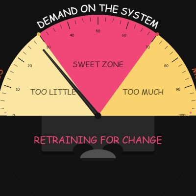
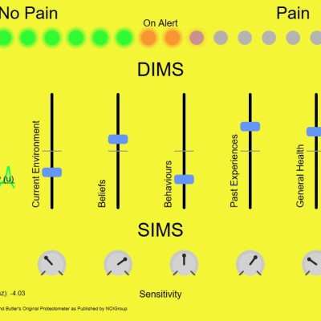
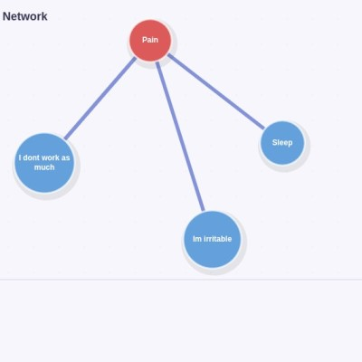

Zone
Sweet Zone
Vintage VU-style half-moon meter with editable labels

Meter
Protectometer
Interactive pain sensitivity meter with Lorenz system

Network
Case Formulations
Interactive pain network builder